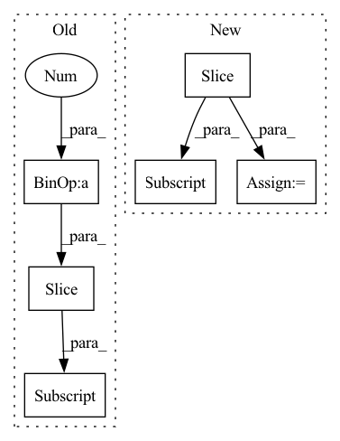

Pattern ID :20524
Before Change
B = np.zeros_like(A)
for i in range(1,A.shape[0]-1):
for j in range(1, A.shape[1]-1):
pixels = A[i-1:i+2,j-1:j+2] .ravel()
pixels = pixels.copy()
pixels.sort()
B[i,j] = pixels[r]After Change
s1 = max(0, j - 1)
e0 = min(A.shape[0], i + 2)
e1 = min(A.shape[1], j + 2)
pixels = list(A[s0:e0, s1:e1] .ravel())
pixels.extend([0] * (9-len(pixels)))
pixels.sort()
B[i,j] = pixels[r]In pattern: SUPERPATTERN
Frequency: 3
Non-data size: 6
Instances Fragment ID: 66348596
Project Name: luispedro/mahotas
Commit Name: 3035cc365d6a2d4a379212b158eb577cdd2bd39c
Time: 2012-11-28
Author: luis@luispedro.org
File Name: mahotas/tests/test_median_filter.py
M Class Name: AnonimousClass
N Class Name: AnonimousClass
M Method Name: _slow_rank_filter(2)
N Method Name: _slow_rank_filter(2)
M Parent Class:
N Parent Class:
M File Name: mahotas/tests/test_median_filter.py
N File Name: mahotas/tests/test_median_filter.py
M Start Line: 13
M End Line: 19
N Start Line: 13
N End Line: 23
Before Change
x_residual = x_residual + x
in_channels = growth_rate[idx]
stacked_channels = sum(growth_rate[idx+1:] )
sections = [in_channels, stacked_channels]
if idx != depth - 1:After Change
x = input
else:
_in_channels = growth_rate[idx - 1]
sections = [_in_channels, sum(growth_rate[idx:] )]
x, x_residual = torch.split(x_residual, sections, dim=1)
x = self.net[idx](x) Fragment ID: 66348592
Project Name: tky823/dnn-based_source_separation
Commit Name: 3bac874df403a2b5648fd98049865790c104ed55
Time: 2021-10-16
Author: 40362510+tky823@users.noreply.github.com
File Name: src/models/d2net.py
M Class Name: D2BlockFixedDilation
N Class Name: D2BlockFixedDilation
M Method Name: forward(2)
N Method Name: forward(2)
M Parent Class: nn.Module
N Parent Class: nn.Module
M File Name: src/models/d2net.py
N File Name: src/models/d2net.py
M Start Line: 75
M End Line: 89
N Start Line: 84
N End Line: 92
Before Change
x_residual = x_residual + x
in_channels = growth_rate[idx]
stacked_channels = sum(growth_rate[idx+1:] )
sections = [in_channels, stacked_channels]
if idx != depth - 1:After Change
x = input
else:
_in_channels = growth_rate[idx - 1]
sections = [_in_channels, sum(growth_rate[idx:] )]
x, x_residual = torch.split(x_residual, sections, dim=1)
x = self.net[idx](x) Fragment ID: 66348600
Project Name: tky823/dnn-based_source_separation
Commit Name: 3bac874df403a2b5648fd98049865790c104ed55
Time: 2021-10-16
Author: 40362510+tky823@users.noreply.github.com
File Name: src/models/d2net.py
M Class Name: D2Block
N Class Name: D2Block
M Method Name: forward(2)
N Method Name: forward(2)
M Parent Class: nn.Module
N Parent Class: nn.Module
M File Name: src/models/d2net.py
N File Name: src/models/d2net.py
M Start Line: 174
M End Line: 188
N Start Line: 187
N End Line: 195